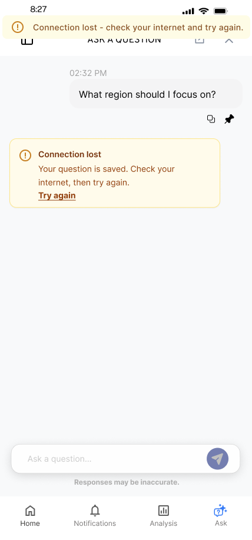

FactorLab · SmartTagIt / CONVERSATIONAL AI · MOBILE + WEB
Give an AI conversation a way forward.
Designing Flint’s first question, waiting states, and recovery so the conversation holds together when a response stalls or the connection drops.


THE PROBLEM
What needed to become clearer?
An AI chat experience is more than an input field and an answer. People need a useful starting point, a signal that something is happening, and a clear response when the connection or the answer fails.
MY CONTRIBUTION
From an open question to a design decision.
I developed mobile and desktop conversation flows for Flint, SmartTagIt’s AI assistant. I worked through question suggestions, answer actions, waiting, interrupted responses, and saved questions, then organized the states and annotations for engineering.
DECISION 01
Make the first question easier to ask.
An empty conversation asks people to work out both what to ask and how to begin. I explored suggested questions and a question library as starting points, while keeping space for people to ask their own question.
DECISION 02
Give waiting a visible state.
While Flint prepared an answer, the interface needed to show that the request was in progress. I explored that state within the conversation and worked through animation constraints with the product lead.
DECISION 03
Match the recovery to what actually happened.
A lost connection, an answer that never starts, and an answer that stops midway are different situations. I designed distinct messages and actions: retry a saved question, ask again, or continue an incomplete response. The next action follows the state of the conversation.

OUTCOME & REFLECTION
A connected handoff, from first question to recovery.
I brought the entry, waiting, saved-question, and recovery flows together in an annotated handoff for engineering. The mobile and desktop designs made each state and its next action explicit.
The most consequential interaction decisions often happen when the system cannot give people what they expected. Working through those states early helped me make the product’s behavior clear enough to discuss with the team.
The next question I would test
I would test whether people can distinguish an incomplete answer from a failed request, then track whether they recover successfully or repeat a question unnecessarily.
Original Figma exports and project walkthroughs, including the March 27, 2026 error-state handoff. Screens show design variants with sample content; release of individual variants is unverified.